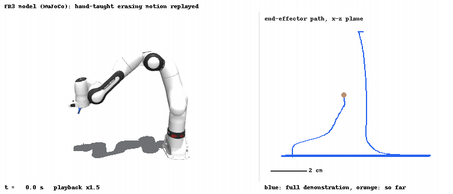

Four projects on a UR5e, a Franka Panda and a Franka FR3: drawing from an SVG, teaching and replaying a motion, pressing a lit button found by a camera, and moving a tool through a fixed point.
Private repository. This page describes the work without the code.
At a glance
4
projects, 3 robots
77 s → ~180 s
drawing time, sim vs. real
13,833
taught samples over 13.8 s
3
priority levels in the RCM solver

Simulation only: the recorded hand-guided erasing demonstration (13.8 s) replayed kinematically on a MuJoCo FR3 model at 1.5x. It shows the taught motion, not the joint-impedance controller tracking it, and is not lab footage.
The problem
Each project put a different part of manipulation on a real robot: offline programming and its timing, torque-level replay of a human demonstration, perception that has to be trusted near contact, and redundancy resolution under a hard constraint.
How it works
The drawing project is programmed offline in RoboDK and exported to URScript. The other three are ROS 2 Humble packages on top of franka_ros2: a joint-impedance torque controller for replay, a perception node plus a custom contact controller for the button press, and a task-priority inverse-kinematics solver publishing joint velocities for the RCM project.
Key decisions
01
Replay with a joint-impedance torque controller
Chosen
The taught CSV is interpolated and tracked with τ = K(q_goal − q) − D·q̇ through the effort interface, after a warm-start move to the first sample.
Instead of
A position controller.
Trade-off
Compliant replay, so a software safety layer sits in front: non-finite torques become zero and each joint is clamped in magnitude and rate. It does not replace Franka's own safety.
02
Vision decides which button; taught poses decide where to press
Chosen
HSV colour and brightness thresholding finds the lit button; the press itself uses taught positions.
Instead of
Fully visual 3D pressing, and MoveIt free-space trajectories that were too large for the compact board.
Trade-off
Small calibration or execution errors are not trusted during contact, but the press is only validated at the taught board placement.
03
Strict task priority with an 8th virtual joint
Chosen
Insertion depth is a virtual prismatic joint η. The RCM constraint comes first, tool-tip tracking runs in its null space, and joint-limit centering in what is left, with damped least squares (1e‑3).
Instead of
Weighted, non-strict priorities.
Trade-off
When the tasks conflict, the tip yields to the RCM. Analytical Jacobians are checked against finite differences in a unit test.
04
Measure simulated vs. real time instead of assuming it
Chosen
SVG paths sampled at about 5 mm with a 1 mm blend radius, then timed in simulation and on the UR5e.
Instead of
Not documented.
Trade-off
The circle took 44 s simulated vs. about 60 s real, the robot drawing 77 s vs. about 180 s. The gap is attributed to many short segments, acceleration limits and the small blend radius; a run to confirm that explanation is not recorded.
Results
The RCM controller ran on a physical FR3. The teach-and-replay and button-press controllers ran on the lab robots. After the course, the repository gained CI that builds and tests the RCM package and runs the perception tests.
My part
Group coursework in a team of 4. I worked on code development and real-robot testing in all four projects. All course commits used a shared team account, so the history cannot show who wrote which part; I describe my role and do not claim any project as mine alone.
Limits and what is next
No numeric RCM error summary is recorded; the errors are in a result plot only.
Button detection accuracy and lighting robustness were not measured.
The timing explanation for the drawing project was not confirmed with a second run.